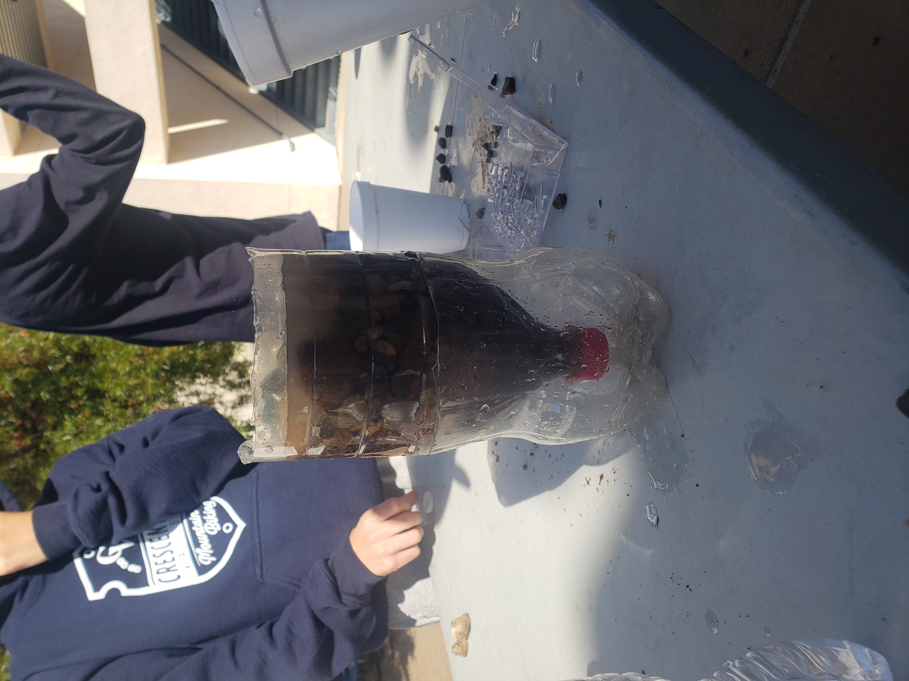
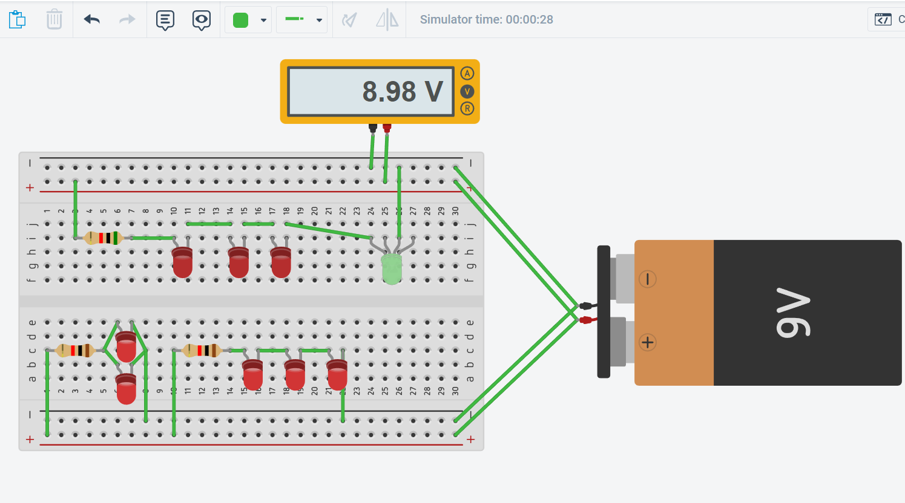

This week the unit was bioengineering. We made CADs of an animal prosthetic. I decided to make a chicken leg prosthetic. I modeled it based off of images of different bird prosthetics and human leg prosthetics. I decided to add the toes/claws for aesthetic and to increase footing and grip.
*10/17/2022 - 10/21/2022*
This week we continued our bottle rocket construction. Our design consisted of a cone head for aerodynamics and 3 parallelogram fins because that's what a website said was ideal. However, in testing, our rocket seemed to be too top heavy because it just dipped forward instead of shooting up. It probably could have gone better if it was angled a little higher at the start, but we couldn't change that.
*10/24/2022 - 10/27/2022*

This week we started our environmental engineering unit. Our project was creating a water filter out of rocks and other sediments. Ours was pretty successful and consisted of a lot of cotton at the bottom, then sand, small rocks, and large rocks.
*10/31/2022 - 11/4/2022*

This week we started our electrical engineering unit. We learned about circuits and breadboarding, including the power and ground. We used tinkercad to create a circuit that turns on various LED lights. We created a parallel circuit(bottom left), and series circuits(top & bottom right).
*11/7/2022 - 11/10/2022*
This week we continued in electrical engineering. We worked with actual circuits on a breadboard. An arduino connected to a laptop was used to power the breadboard. We had to create a parallel circuit, series circuit, and one with just resistors (in order in pictures). We then had to figure out the voltage at different points in the circuit using a multimeter.